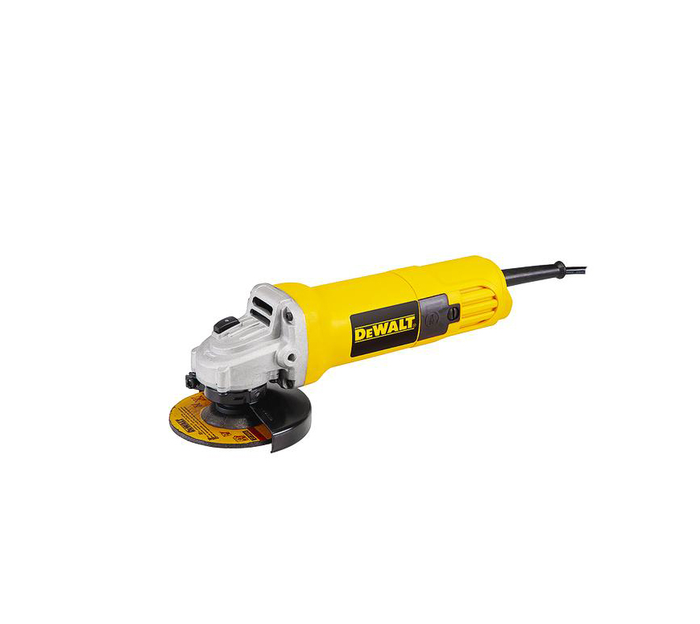
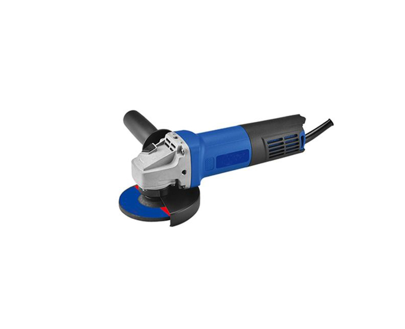

Angle Grinder
The angle grinder is a spinning disc that moves at extremely high RPMs.
Angle grinders are used for many different applications, it all depends on the disc you choose.

Side Grinder
Side grinders are a handheld power tool which cut, grind, and polish metal and non-metal objects.
A compressed tool, petrol engine, or an electric motor is required to power these tools.

Jackhammer
The jackhammer is used when you are working on construction sites,
you need to break solid stones or concrete bricks at times..